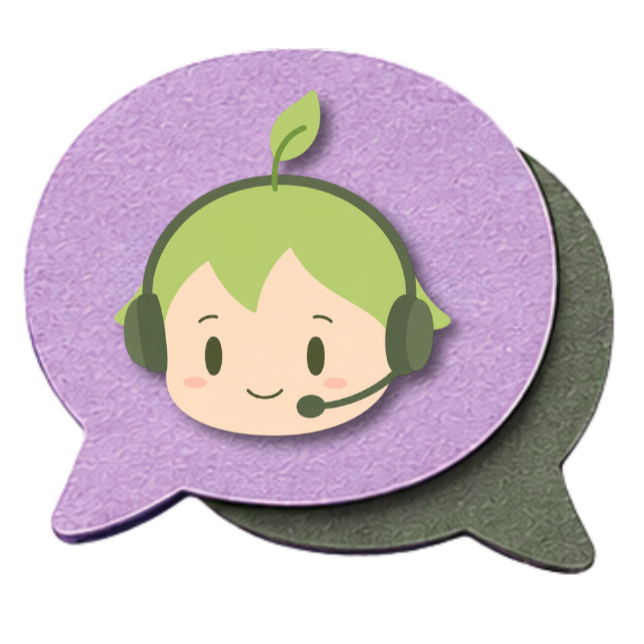
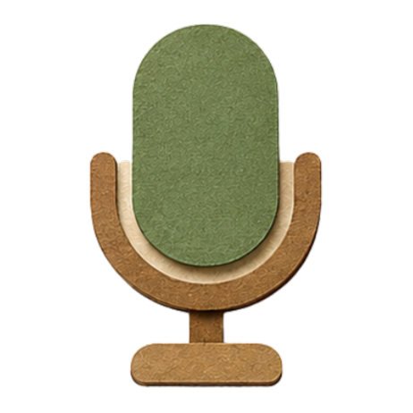
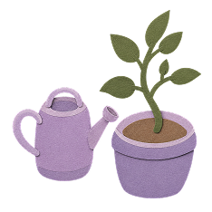

Herramientas para cada momento
Cada vez que interactuás con Huly, la experiencia se adapta más a vos y a tus preferencias.

Chat de acompañamiento emocional
Un espacio seguro para conversar y recibir orientación empática.

Dictado por voz
Expresate de forma natural mientras Huly identifica señales emocionales presentes en tu voz.
Diario emocional
Registrá pensamientos, emociones y experiencias importantes.

Retos personalizados
Pequeñas acciones adaptadas a tu situación y objetivos.

Respiración guiada
Ejercicios simples para recuperar la calma y la concentración.
Minijuegos relajantes
Actividades diseñadas para reducir el estrés sin presión ni competencia.
Con el tiempo, Huly identifica qué herramientas suelen ayudarte en distintos momentos y adapta sus sugerencias según tu experiencia personal.